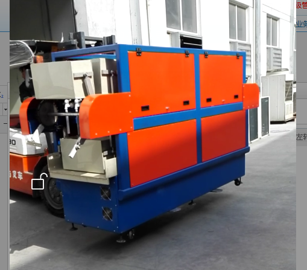
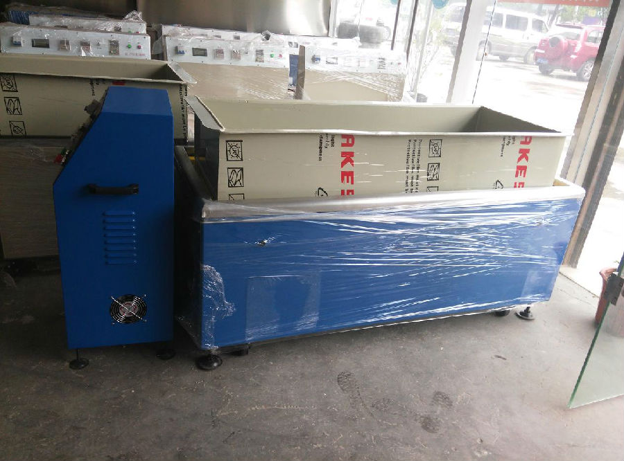
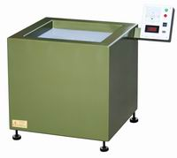

苏州大越磁力研磨机使用说明书




使
用
说
明
书
苏州大越平移式磁力抛光机
目录
使用说明书…………………………………………………… 1
目录…………………………………………………………… 2
安全使用……………………………………………………… 3
设备简介、工作原理、功能特点…………………………… 4
设备用途、优点……………………………………………… 5
机器使用解答………………………………………………… 6-7
代码显示解答………………………………………………… 7
安装与接线…………………………………………………… 8
操作流程……………………………………………………… 9
设备日常保养、保修卡……………………………………… 10
服务联系方式………………………………………………… 11
安全使用（普通磁力抛光机与平移式磁力抛光类似）
使用本机器前请先仔细阅读使用说明书。
1. 为了保证安全避免火灾，请勿将液体和水溅入电线和插头上,以及后盖板冷却风扇上，并且在机器台面上尽可能保持干燥和清洁。
2. 使用该设备时请勿将磁性工件投入加工（如铁，带磁性工件）,需要时候需和厂家联系，勿将电子贵重物品放置在机器台面上（如手表、手机、电子设备仪器等）。
3. 该设备零部件损坏或工作出现异常时，立即切断电源停止工作并通知相关售后服务人员。
4. 机器表面发热时，注意查看后盖的冷风散热风扇是否正常运转。禁止高温应用。
5. 在不使用该设备时请将电源关闭，切断总电源。
6. 电源需加装过流开关,建议选用6A以内。
7. 请勿长时间低频率工作,雷电可能导致损坏机器。
警告

1. 铁类,易被磁大型金属,放在抛光槽内,可能对人体造成严重伤害.
2. 名贵手表、电子产品放在抛光槽内可能导致损坏.
3．机器使用时候必须接地,通电前确认输入电源电压正确。
4．不要把机器安装在太阳照射、雨淋、过于潮湿、强酸、碱车间内.
5．自行维修需要和厂家联系确认,否则对修理人员可能成严重伤害.
设备简介
感谢您购买我们公司精密零件去毛刺抛光机！我们是自主研发的一种新型抛光设备，本机采用全球先进上好材料，简单操控独特的设计，彻底解决传统抛光的难题。解决了伤工件、死角、管内、通孔、盲孔等抛光研磨一系列的问题，提升了抛光效率及产品的品质。
工作原理：
本抛光去毛刺机是利用超强的磁场力量，传动细小的研磨钢针，使抛光也产生高速旋浮流动，换向翻滚，以众多去毛刺不锈钢钢针轻轻滑过工件各个表面及工件内孔、内外牙及表面摩擦，达到清洗、去油垢杂质、去除毛边、研磨光亮的精密抛光效果。

功能特点
●成本低，采用半永久性不锈钢针磨材，消耗极低。
●研磨速度快，平均每次研磨3-15分钟，换工件快，不停机可换研磨工件。
●可变频率调节，满足各种抛光需求
●抛光无死角
●操作简单，绝对安全，完全免技术，一人可操控数台机器
●电压、电流、频率、时间均可监控，简洁明了。
●零件成品研磨后，绝不变形，无死角，不损伤表面，不影响精度。
设备用途
●适用于轻铁类金属,非铁类金属,硬质塑胶等精密零件
●实现除毛刺,倒角,抛光,洗净等多重功效
●对于不规则状零件,孔状、管状等死角,夹缝等均可抛光
●定制时间，加工速度快捷,操作简单安全
●可变频率调节，满足各种抛光需求
●抛光无死角
●结束提醒，可提醒抛光完成，可一人操作多台
●电压、电流、频率、时间均可监控，简洁明了
●抛光过程无需人工干预
●磁力抛光研磨没有死角，让所有部位完全研磨；研磨后工件绝不变形、绝不损伤表面、绝不影响精度。
●成本低，速度快，约2-20分钟完成；操作简单、方便、完全免技术，可多机操作。
设备优点：
1、刹车车功能
采用电子反相电流输出电极自动刹车，优点：无摩擦，无损耗，耐用，节能。
2、整体结构，
3．5国标钢板外壳，整体无缝隙，结构坚固厚实稳定。五道工序高温防脱漆防腐处理。
3、安全措施，
轻触点启动，控制部分全冷元件设计，可以直接在露天，大雨中工作使用不漏电，安全。
4、传动
设计中，转盘无无功率损耗，2.2KW电机在任何速度，空载和负载间无简速现象。
完全够用，1000小时不停机检测稳定， 节能。
机器使用解答
当出现以下现象，按下表所表示信息， 对证原因，对策供您参考解答。
现象 | 原因 | 对策 |
抛光桶底部漏水 | 桶底部刺有抛光针 | 用钳子将针去除将桶底加/点上胶水 |
抛光桶底磨损 | 购置新桶 | |
计时器不闪动 | 未按启动开关 | 按启动开关即可计时 |
抛光桶易坏 | 水温高 | 及时换水（正常水温范围在50℃内） |
抛光槽内有抛光针 | 时常清理，保持研磨槽内清洁 | |
抛光桶在研磨槽内跟随机器转动 | 抛光垫表面有水或无抛光垫使用 | 清干水份、加至硅胶抛光垫 |
机器震动大
| 机器某个脚不在受力位置 | 调整脚的长短平衡受力位置 |
抛光针放置过量 | 减少抛光针 | |
工件带磁性 | 减少工件量 | |
工件槽内卡针 | 抛光针长短、大小或累加尺寸与工件槽尺寸相等 | 调整抛光针尺寸大小长短 |
工件表面有麻点 | 工件与工件之间严重碰撞 | 做夹具固定工件 |
调整机器力度 1.降低频率 2.垫高研磨桶和机器之间的距离(只允许非金属、导电板类) | ||
.抛光针力度太大 | 调整抛光针、 | |
调整机器力度。. 1.降低频率 2.垫高研磨桶和机器这间的距离(只允许非金属、导电板类) | ||
去毛刺效果差 | 研磨力度不够 | 调高频率,尽量减少抛光桶与机器间的距离、尽量选择薄/光滑桶底的抛光桶 |
抛光针力度不够 | 更换粗/长的抛光针、检查抛光针是否够量 | |
工件无光泽 | 抛光剂与产品材质发生化学反应 | 更换/调整抛光剂酸碱度，选择中性抛光剂 |
工件有油污 | 去油后抛光 | |
抛光工件效率低 | 抛光针太细/短 | 调整抛光针 |
抛光剂少 | 增加抛光剂、更换品质优良的抛光剂 | |
工件有油污 | 先除油后抛光或选择酸碱性浓度高的抛光剂 | |
抛光水放置过量 | 减少水、增加抛光水的浓度 | |
工件过量 | 减至合适工件数量、以工件能翻滚为准 | |
抛光桶、针发黑 | 工件有油污 | 用清洗剂单独清理抛光桶抛光针后再使用 |
指示正常时机器不动作 | 1.电压不正常 | 检查电压是否低于200V |
2.抛光针放置过量 | 减少抛光针 | |
3.工件带磁 | 减少工件量 | |
4.显示EO(保护) | 1.切断总电源待显示熄灭后重新启动设备 2.切断总电源待显示熄灭后按调速器上红色的stop/reset键 | |
电源跳闸 | 机器内部潮湿 | 将机器更换环境晒太阳几小时或用电热吹风机吹干 |
机器表面发热 | 工作环境太热 | 更换机器工作环境 |
机器扇热风扇坏 | 更换机器后面的扇热风扇 | |
机器有焦漆味 | 工作电压过高 | 解决机器使用电源 |
电压表无显示、机器无动作 | 电源输入无电压 | 检查前端电源 |
机器故障 | 通知维修 | |
抛光桶随机转动 | 机器桶底部有油污或抛光槽内有水迹 | 清理油污水迹干燥后使用 |
抛光槽内无硅胶垫 | 放置硅胶垫 |
显示代码 | 代码意义 | 处理方法 |
E o | 硬件紧急保护 | 检查是否有短路、堵转、过压、电源不符等；未停稳又急速起动情况；或加减速时间太短等。减少抛光针。 |
E o c R | 加速中过电流 | 加速太快或启动机械阻尼太大引起，注意调整加速时间 |
E o c n | 等速中过电流 | 恒速运行中是否有突加性负载、超载或堵转现象 |
E o c d | 减速中过电流 | 一般由减速太快引起，注意调整减速时间 |
E o U | 过电压 | 电源电压过高，减速或停车时间过快时，因机械能转换造成泵升电压过高（可增大减速时间的数值） |
E o H | 变频器过热 | 检查环境温度是否过高、变频器是否超载运行；应改善机器通风条件，检查机器后风扇是否工作。 |
E o L | 电子热继电器动作 | 检查电机、变频器是否超载运行；或是否长期处于低速大电流运行状态（参见电子热继电器：过载保护特性图） |
E o L 2 | 过转矩保护动作 | 超过设定时的过转矩值，查过转矩相关参数和外部转矩 |
E L U | 低电压 | 电源电压太低、进线太细引起母线压降或有掉电发生 |
E c H | 连锁断 | DO98~D101中设为连锁的端子处在断开状态，须重新连通后并按复位后才能恢复正常操作。 |
代码显示解答：
操作流程（平移式磁力抛光机必要时需做夹具）


设备日常保养
尊敬的用户，感谢您购买、使用我公司产品。
机器设备日常使用和保养得当，可避免人为因素造成的元件损坏、延长机器的使用寿命，精密去毛刺抛光机也不例外。
1. 防损：在使用设备时防止液体操作机器表面，抛光液溅到机器上时应及时擦拭干净。
2. 防脏：为了保持机器表机整洁延长机器使用寿命，在使用设备后用布将其表面擦拭
干净。
3. 防尘：设备不使用时控制面板可用胶袋套住。
4. 防雷击：在发生雷电天气时需关闭机器电源以及拔掉电源插头，防止被雷击坏。
5. 防止桶损坏：设备运行时抛光针力度强，所以把桶放置到抛光槽内时、如抛光槽内
有抛光针要及时清理干净。
保修卡
用户单位： | |
详细地址： | |
联 系 人： | 电话（传真）： |
设备型号： | 出厂编号： |
购买日期： | |
故障原因及现象： | |
服务人员记录：
服务事项：
服务人员签名： 电话： 年 月 日 | |
用户对服务质量评价： □好 □较好 □一般 □差
用户签名： 电话： 年 月 日 | |
服务跟踪记录：
□电话回访 □信函回访 年 月 日 | |
服务联系方式
欢迎您来电咨询抛光调试技术、维修及配件购买。如果您对我们的产品和服务有任何意见和建议，期待您与我们联系。
公 司：苏州市吴中区�f直大越五金加工厂
联系人：肖先生13306133213
电 话：0512-65042925
传 真：0512-66193672
邮 箱：kongzhongyiliao@qq.com
地 址：苏州市吴中区�f直镇鸿福路1号
网 址：www.jingmiqumaoci.com